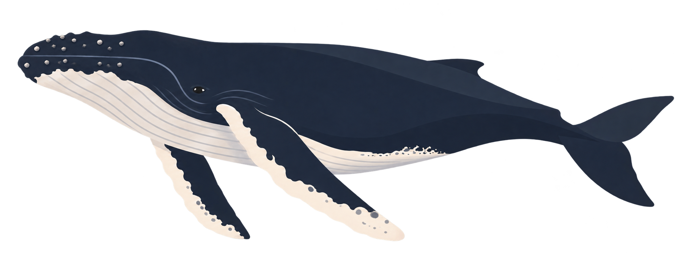
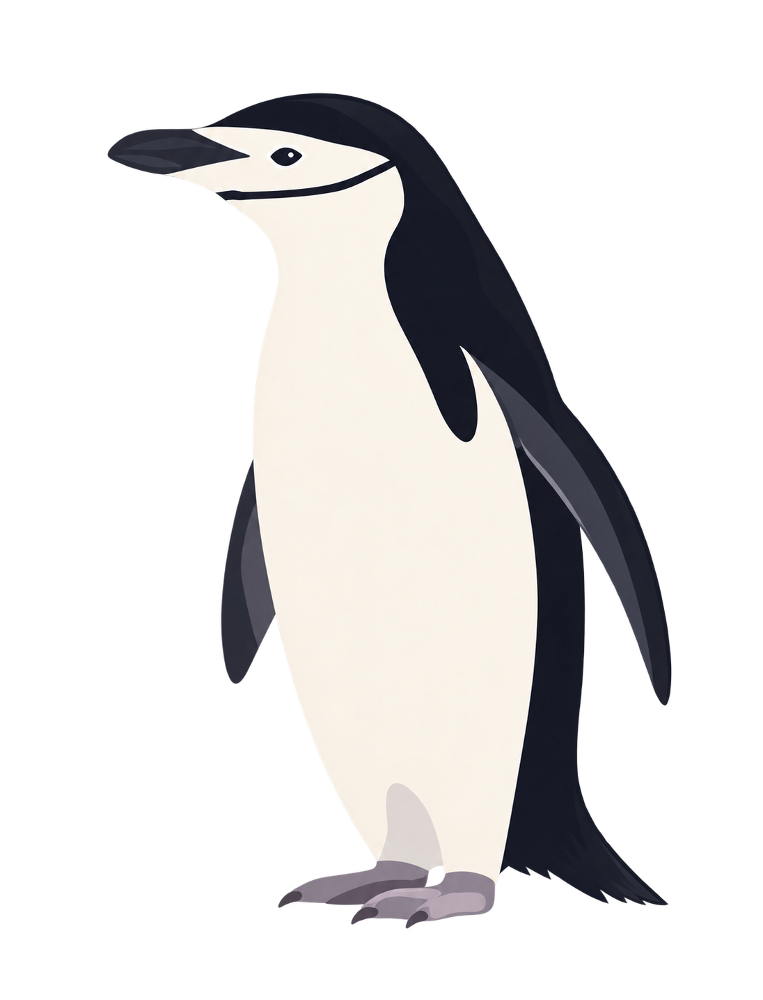
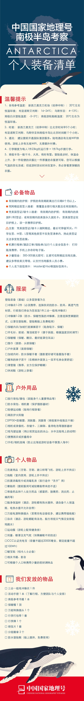
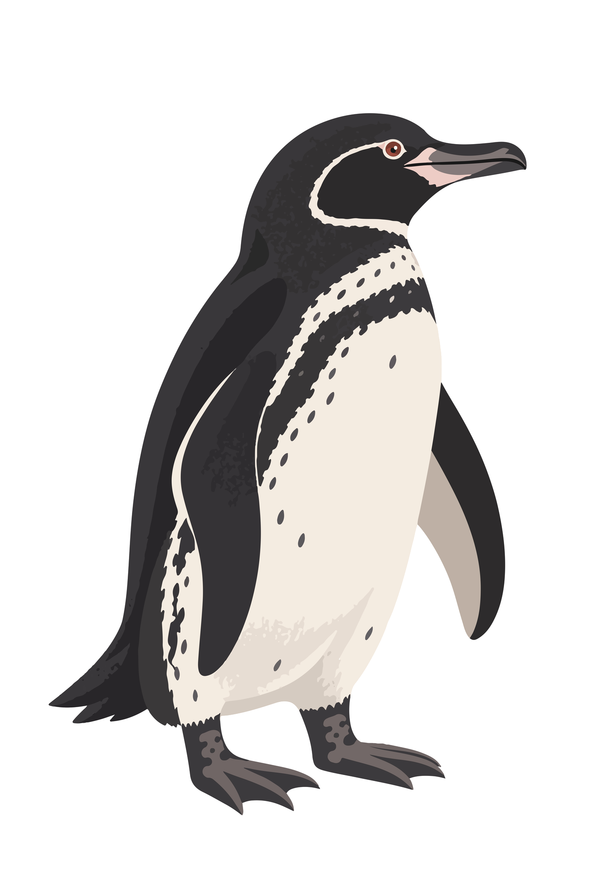
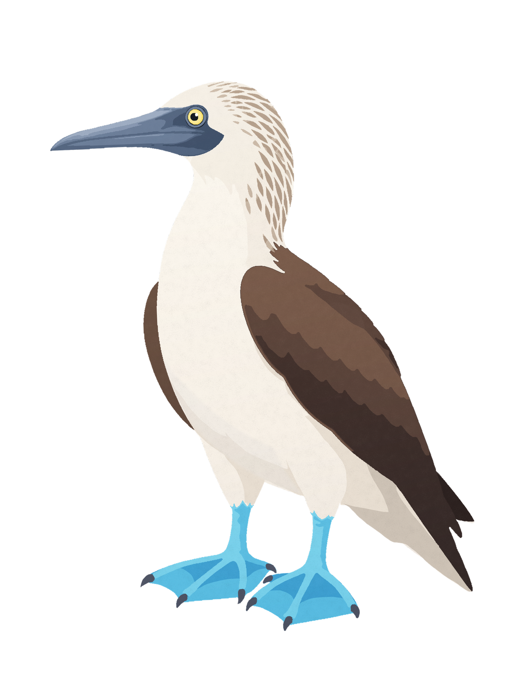
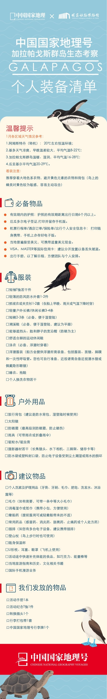

DPS Placement Year · Reflective Blog
Placement Blog
Weekly reflections from my DPS placement year, written alongside my placement work in creative communication for expedition travel programmes.
Emma Hu
Week 1 — First Thoughts and Wellbeing
Learning What a Working Day Really Means
I started my placement at National Geographic China hoping to understand what professional creative work looks like outside university. I certainly have, although perhaps not quite in the way I expected. My work mainly involves creative communication for expedition travel projects, including wildlife illustrations, editorial layouts, equipment guides and promotional materials for destinations such as Antarctica and the Galápagos Islands. It’s been interesting to see how scientific information is transformed into something accessible to a wider audience. I’ve also learned that making something both accurate and visually appealing isn’t always easy. Many of our materials are intended for older travellers, so readability, clarity and practical information often take priority over creative experimentation. There are also several rounds of review before anything can be published. I understand why these processes are necessary, but they have made me realise how much of my work is shaped by decisions made by other people.
What has surprised me most, however, is the relationship between working time and actual productivity. With the help of AI and the skills I’ve already developed, I can sometimes finish my assigned tasks much faster than expected, yet I still need to remain in the office for the full working day. Combined with a commute of around three hours, this has made me question whether spending more time at work necessarily means producing more valuable work. Before this placement, I had experienced long days during ecological fieldwork, where our schedules were shaped by tides, weather and the behaviour of animals. Those days could be physically exhausting, but there was usually a clear reason for being there at a particular moment. In an office, time seems to operate very differently.
I’m beginning to understand that professional work isn’t simply about completing tasks. It’s also about adapting to organisational systems, expectations, communication and other people’s working rhythms. These are all valuable things to learn, but I’ve started wondering why working structures don’t necessarily change when someone becomes more efficient at their tasks. I’ve also noticed how working hours affect my life outside the office. Sometimes I don’t feel that I’ve used much creative energy during the day, but the commute and fixed schedule still leave me exhausted. By the time I get home, it’s often easier to choose something relaxing than to continue developing my own work. Gradually, I’ve become concerned about the possibility of life turning into a cycle of working, commuting, recovering, and doing it all again.
This has made me reconsider what wellbeing actually means. I used to think that having enough time to rest was more or less the same as maintaining a good work-life balance. Now I’m beginning to realise that resting and having a life of your own aren’t quite the same thing. I still want time to draw, experiment, meet people, travel and develop ideas that have nothing to do with my job description. Recently, I’ve been trying to give myself small periods of time to create without a brief or an expected outcome. It sounds simple, but after spending so much time working towards specific requirements, I’ve realised how difficult it can be to create purely out of curiosity. Sometimes, even my personal creative time starts to feel like another list of tasks to complete.
I haven’t found an ideal solution, and I don’t think all of these issues can be solved through better personal time management. Working structures, financial needs and personal ambitions all place real limitations on the choices we can make. But this placement has encouraged me to think more seriously about how I want work to fit into my life, rather than continually organising my life around work.
Perhaps wellbeing isn’t just about having enough time to rest. It’s also about having enough freedom and energy to feel that my time still belongs to me.
From the placement
Antarctic Peninsula Expedition



Personal Equipment Checklist · Full sheet
The placement work described above: species illustrations of four Antarctic animals and the long-form personal equipment checklist I designed for travellers on the Antarctic Peninsula expedition programme. View the full project →
Week 2 — Reflections: Positionality Statement
Where Am I Speaking From?
Recently, I’ve been thinking about how difficult it is to define myself through a single discipline or identity. I’m an illustration student, but a significant part of my creative practice has developed outside the studio. I’ve participated in bird monitoring, marine biology fieldwork and ecological data projects. I’ve also lived and studied in China, the UK and Australia, moving between different educational systems, cultures and working environments. These experiences have shaped not only what I make, but also how I understand the world around me.
When I worked with researchers monitoring breeding birds along the Chinese coast, I learned to observe carefully, record accurately and be patient with things I couldn’t control. During fieldwork, a bird, an egg or a particular behaviour could all hold scientific significance. As observers, we needed to describe what was happening as accurately as possible, rather than project our own emotions onto the animals. But when I later transformed those experiences into an exhibition, I found myself interpreting them in a completely different way. The same experience could mean something entirely different to different people. For a researcher, an observation might become a data point; for an artist, it might become a drawing or a story; and for someone encountering a bird through my exhibition, it might simply become the beginning of a new curiosity. I don’t think any of these ways of understanding the experience is necessarily more valuable than another. Instead, I’m increasingly interested in what happens when different perspectives meet.
However, working between disciplines also means being more aware of my limitations. My fieldwork experience has given me access to scientific knowledge, but that doesn’t make me an authority on every ecological subject. When translating scientific research into artwork, I need to consider which elements are supported by evidence, which come from my own observations and feelings, and which belong to artistic imagination. Art allows us to express subjective experiences, but that freedom doesn’t mean we can freely speak on behalf of other people, species or environments we don’t fully understand.
Living across different cultures has also made this question more complicated. Studying and travelling internationally have given me opportunities to meet people and explore environments I might otherwise never have encountered, and I recognise this as a privilege. Access to education, financial resources, language skills, visas and professional networks can all influence where someone is able to go and what opportunities become available to them. At times, I’ve found it relatively natural to move between different professional environments. At other times, I’ve experienced how difficult it can be to enter an established community without the expected background or connections. I’ve started noticing that many professional rules are never explicitly stated. They appear in how people introduce themselves, build relationships, recognise expertise and decide which experiences are considered valuable. This has also encouraged me to question whether I’ve unconsciously used similar standards when judging others.
Looking back, I used to think of myself as someone still searching for a clear professional identity. Am I an illustrator, a science communicator or someone involved in ecological research? Now I’m not sure that I actually need to choose. These identities aren’t necessarily in conflict, and they don’t have to lead towards a single professional label. Perhaps what’s more important is recognising which perspective I’m speaking from at a particular moment, and why I’ve chosen to approach something in that way. As a fieldwork participant, I’m responsible for the accuracy of my observations; as an artist, I’m responsible for how I interpret and communicate experiences; and as someone moving between cultures, I need to remember that my own knowledge and experiences cannot represent everyone.
For me, positionality isn’t simply about listing my background or identities. It’s about understanding how my experiences influence what I can see, while remaining aware of what I might be overlooking. I don’t want my previous work, professional connections or other people’s expectations to determine too early what I should be interested in next. I’d like to remain aware of where I’m speaking from, while allowing that position to change as I encounter new people, places and experiences.
Week 3 — Values and Ethics: What Are Your Values?
What Do I Want My Work to Stand For?
Before this placement, if someone had asked about my values as an artist, I probably would have talked about nature, conservation, scientific accuracy and making knowledge accessible. I still believe in all of those things, but recently I’ve begun to question whether my values should be defined mainly by the subjects I work with, or by the way I choose to work.
My placement has made this question much more concrete. I’m currently involved in creative communication for expedition travel projects, including destinations with significant ecological importance. Our role is to help potential travellers understand these places and become interested in exploring them. I have mixed feelings about this. On one hand, I genuinely believe in the value of experiencing nature firsthand. Much of my own interest in ecology developed through direct encounters with the natural world. Some things are difficult to replace with books, images or data, such as waiting for birds to appear along the coast or entering an unfamiliar underwater ecosystem. On the other hand, travelling to these places can also have environmental consequences. Should we encourage more people to visit ecologically sensitive areas? If an expedition helps participants develop a deeper understanding of conservation, how should we weigh that educational value against its environmental impact? I don’t have a simple answer, but I no longer think that a project is automatically environmentally responsible simply because it involves nature or science. In fact, when projects use the language of conservation, exploration and education, perhaps we have an even greater responsibility to question their actual impact.
This has made me realise that ethics shouldn’t only be about the message an artwork communicates, but also about how it is produced, distributed and used. I’ve started thinking about similar questions within the art world itself. Recently, I independently applied for and received a £1,000 grant to organise another round of my bird ocarina workshops. After spending a long time applying for opportunities and waiting for external feedback, receiving this support was incredibly encouraging. It meant not only that I could access the resources to develop my project, but also that an idea I’d developed independently could gain recognition beyond university. At the same time, it made me think about my relationship with external validation.
In the creative industries, exhibitions, awards, grants and residencies are often used as evidence of professional development. Of course, I want to access these opportunities because they can provide funding, space, networks and the possibility of continuing my work. But what happens if someone begins to decide what to create based on what is most likely to be selected? I don’t want to keep repeating subjects or formats simply because they’ve received recognition before. Recently, I’ve become interested in exploring things that are quite different from my previous ecological projects, particularly relationships between people, emotional attachment, missed encounters, misunderstandings and seemingly insignificant experiences that continue to influence us long afterwards.
Sometimes I feel uncertain about whether these interests are serious enough. Compared with environmental conservation, science communication or socially engaged practice, a story about the relationship between two people, or the emotional bonds within an imaginary world, might seem harder to justify as a project with a clear public purpose. But I’ve started questioning why I assume that art needs an explicitly educational or social objective to be taken seriously. Some of the films and stories that have affected me most haven’t taught me a particular skill or necessarily changed my position on a social issue. Instead, they’ve briefly changed the way I experience life, or helped me understand something about myself and my relationships with others. Their impact might be difficult to measure, but that doesn’t make it less meaningful.
Perhaps art doesn’t always need to explain something or solve a problem. Sometimes its value lies in making us feel something, recognise ourselves in another person, or experience the world differently for a moment. Of course, creative freedom doesn’t mean working without responsibility. I still want my practice to respect evidence, care about other people and consider its relationship with wider social and environmental contexts. But I also want to preserve the freedom to create out of curiosity, humour, emotion and personal expression.
If I were to summarise my values now, I would say that I care about curiosity, care, honesty, accessibility and creative independence. I want to follow professional standards when they are necessary, but also feel confident enough to question them when appropriate. Most importantly, I hope external recognition can support the things I genuinely want to explore, rather than gradually deciding for me what is worth making. I want my values to be reflected not only in the final content of my work, but also in how I make decisions and what I choose to spend my time on.
From the placement
Galapagos Islands Expedition



Personal Equipment Checklist · Full sheet
More of the placement work: species illustrations of four Galapagos endemics and the personal equipment checklist for the Galapagos Islands expedition programme, produced with China National Geographic Voyages and the National Zoological Museum of China. View the full project →
Week 4 — Futures Thinking: Nature on the Board
Who Gets a Seat at the Table?
What would happen if nature had a voice in the decisions we make? At first, the idea of giving nature a seat on the board sounds almost fictional. How could a bird, a forest or an ocean participate in a meeting? Who would speak for them, and how could we know what they wanted? But the more I think about it, the more I realise that the question isn’t really about whether nature can speak. It’s about why we’ve built systems in which certain interests can so easily be excluded from decision-making. Even if we appoint someone to represent nature, new questions emerge. Who should that representative be: a scientist, a local resident, a conservation volunteer or someone who has developed a relationship with nature through art? And if these people disagree about the future of the same environment, who gets to make the final decision? I don’t think this can be solved simply by adding another seat to the table. It requires us to reconsider who holds decision-making power, who takes responsibility, and how we respond to the needs of those who cannot participate directly.
This has also made me reconsider the role I’d like to play in my future creative practice. In the past, I’ve been used to developing projects independently. From proposing ideas and conducting research to producing work and organising exhibitions, I’ve usually been the person making most of the decisions. This has given me creative freedom and allowed me to shape projects according to my own vision. But as these projects have developed, I’ve become increasingly interested in the things I can’t entirely control. Last year, I organised a solo exhibition around birds and art. Although I’d planned the content and format, many of the things that happened during the exhibition were unexpected. Some visitors became interested in scientific research, others shared their own experiences of observing nature, and some met people they might otherwise never have encountered. These conversations weren’t something I could fully plan. I could design the exhibition space, prepare the activities and invite people to participate, but I couldn’t decide what they would say, what relationships they might develop or whether those connections would continue afterwards. It made me realise that organising a project and controlling a project aren’t necessarily the same thing.
I’d now like to build on that experience through my Self-Initiated Project, by establishing a Nature × Art student society through Arts SU. The society could organise nature walks, field sketching trips, ceramic workshops and other activities that bring students from different disciplines together. But rather than focusing only on how many events we organise, I’m more interested in how something initiated by one person might gradually become a project that no longer depends entirely on them. I’d like to learn how to bring people into a committee, share responsibilities, listen to different opinions and balance my own ideas with the needs of a wider group. If participants have different expectations for the society, should I try to preserve my original vision, or allow the project to change through their involvement? If I genuinely want this to become a community, perhaps I also need to be willing to give up some control.
I think these questions connect closely to Nature on the Board. Whether we’re trying to represent nature in human decisions or involve more people in an independently initiated art project, we face a similar challenge: how can we create meaningful opportunities for participation without assuming that we already understand everyone’s needs? Perhaps this means acknowledging from the beginning that our ideas are incomplete, and allowing feedback to actually influence decisions rather than treating participation as something symbolic. For my SIP, I’d like to experiment with practical ways of doing this, such as involving committee members in choosing activities, inviting participants to propose their own ideas, and reviewing what worked after each event. I’d also like the society to consider the ecological impacts of its activities rather than treating nature simply as a backdrop for creative inspiration. At the same time, I don’t want these considerations to become a rigid set of rules. I’d rather establish enough structure and support to allow people greater freedom, not place more restrictions on them.
This brings me to a different way of imagining the future. Recently, I’ve been developing an idea for a story about travelling, working and searching for something. The main character becomes fascinated by a seabird she once encountered and develops a desire to observe it again. But before she can set off, she has to deal with ordinary life: working, earning money, learning new skills and deciding what kind of future she wants. I imagine a scene where she’s sitting in an office, surrounded by piles of promotional booklets and exhausted by work. The next scene suddenly cuts to a distant island, where a seabird is casually preening its feathers. The bird has no idea what she’s going through. It simply continues living its own life. As the story develops, finding the seabird might become less important than the people she meets, the relationships she forms and the experiences she never planned for. I’m not even sure whether the story needs a definite ending.
I like this uncertainty because it’s quite different from how I’ve usually approached planning my own life. For a long time, I tended to set clear goals: when to graduate, what kind of job to find, where to live and how to become financially independent. Those goals are still important to me, but I’m beginning to realise that some of the most meaningful changes in life may come from things we can’t anticipate. If we’re too focused on reaching a particular destination, might we overlook everything that happens along the way? Perhaps this is what connects my interests in unexpected encounters, relationships between people and participatory art. They all make me wonder whether we can deliberately create the conditions for something meaningful to happen without completely controlling its outcome.
Maybe what I want to develop in the future isn’t just a particular artistic medium, but a way of creating and living. I want to be able to initiate ideas, organise resources and create opportunities, while remaining open to other people’s involvement changing the original direction. I want to make plans for the future without leaving out the people, stories and possibilities that haven’t appeared yet. When I imagine my future now, I don’t just see a particular job title or a finished body of work. I imagine having enough freedom to remain curious, enough stability to keep creating, and enough openness to let other people and unexpected experiences change my direction.
Perhaps the future I’m interested in isn’t something I can plan completely in advance. Perhaps it’s something I can create the conditions for, and then allow to unfold.
MyCAF Profile · 9 November 2026
My Creative Attributes
Confidence, my top three attributes: Self-efficacy, Connectivity, Communication.
Relevance, my top three attributes: Communication, Storytelling, Connectivity.
In reviewing my Creative Attributes, I identified Storytelling, Connectivity, and Curiosity as the most relevant to my creative practice, future career, and personal interests.
Storytelling sits at the core of my work. Whether through illustrated picture books, wildlife conservation records, or travel-based visual archives, I use narrative as a way to connect my audience with the subject matter. I believe strong storytelling gives my projects a unique voice, making them more engaging and memorable. This skill also supports my long-term aim of working across both creative and ecological contexts, where complex ideas need to be communicated in accessible and emotionally resonant ways.
Connectivity is equally important, as my projects often involve collaboration with specialists, communities, and organisations from different fields. Building and sustaining these networks not only opens opportunities for creative exchange but also ensures my work has a wider reach and real-world impact. I value the ability to connect with people from varied backgrounds and disciplines, and I see this as essential for my future practice.
Curiosity is what drives me to explore new materials, research methods, and perspectives. It fuels my cross-disciplinary approach, allowing me to blend art, ecology, and storytelling in ways that feel fresh and authentic. My curiosity ensures that my work continues to evolve, and it helps me remain adaptable to emerging ideas or challenges within my field.
I ranked these attributes highest because they align directly with how I currently work and where I see my practice developing in the future. Skills such as Communication, Proactivity, and Enterprise are also important to me, but I view them as tools that support the three key attributes above rather than as primary drivers of my practice.
Where do I want to be?
I want to become more confident in expressing my ideas and communicating with people from different backgrounds. I’ll practise this through professional networking, collaborative projects and organising activities for my student society.
I’d like to improve how I communicate personal experiences and complex ideas through visual storytelling. I’ll experiment with different formats, including illustration, video and reflective writing, and share my work to gather feedback.
I want to build and maintain meaningful connections with people across different disciplines. Through my Nature × Art Society, workshops and professional networking, I’ll create more opportunities for people to meet, exchange ideas and collaborate.